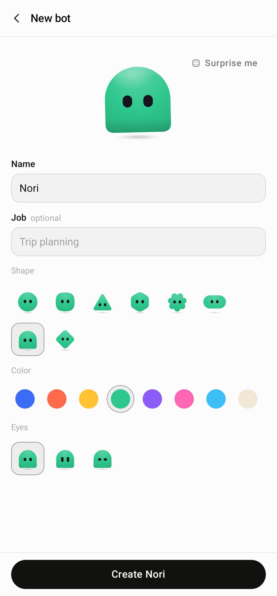
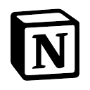
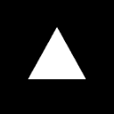

Memory that lasts
Preferences, names, decisions — kept, ranked and recalled. When a chat outgrows the model, a rolling summary holds the thread.
gbot gives you a crew of small, persistent AI teammates. Each one has its own computer, memory, chat and routines — and none of it leaves hardware you own.
They don't just answer. They open pages, fill forms, keep notes and come back when something needs you.
Preferences, names, decisions — kept, ranked and recalled. When a chat outgrows the model, a rolling summary holds the thread.
Anything risky arrives as a card in the chat: approve, decline, or always allow. Questions use the same card.
A private Linux desktop — browser, terminal, files — in a microVM. Watch it work live, or take control for sign-ins.
Prompts on a schedule or a webhook. A morning brief, a nightly tidy-up — they run while you're away.
Up to six bots in one room. The first leads, @mentions bring others in, and they hand work to each other.
Runs on Ollama or any OpenAI-compatible server. Cloud providers are optional, and each account brings its own.
A bot's computer is a real desktop with a browser, a terminal and files — isolated per bot, with no network until you say so.

Every bot is a simple character with its own shape, color and eyes. The eyes say what's happening: thinking, working, stuck, done.
Shapes, colors and lively eyes are drawn by the same rig on every platform.
One tap to sign in to 35 apps that publish an MCP server — or add any custom server with a token.






The whole app, served by one Go binary. Live updates, no build step for you.
localhost:8080A 4 MB Tauri shell with native notifications. It is just your server in a window.
macOSNative Kotlin and Compose. It can also run with no server at all, entirely on your phone.
APKDocker for Postgres, Go, Node and Ollama. No accounts, no keys in a dashboard, no telemetry.
$ git clone https://github.com/ganeshdipdumbare/gbot
$ cd gbot
$ make runThen open http://127.0.0.1:8080 and hatch your first bot.
Chats, memory and files live on your machine. Cloud models are opt-in, and each account brings its own keys.
Each bot gets an isolated microVM with no network until you allow it, and its browser can be limited to a site list.
Risky steps arrive as a card. Once outside text enters a run, changes always ask first, even in Auto.
Not by default. The bots, chats, memory and their computers run on your hardware. If you connect a cloud model, only the prompt and the model's answer go to that provider, with your own key.
Anything on Ollama or an OpenAI-compatible server, plus Anthropic, Gemini, and the ChatGPT account the Codex CLI is signed in to. The phone app can also download a small model and work offline.
gbot is software you run yourself, with no subscription. You pay only for optional cloud models if you choose to connect one.
Browse and fill forms in its own browser, write and read files, remember things, run routines, and talk to other bots. Anything risky waits for your approval.
One command to start the server, or one APK to run it all on your phone.